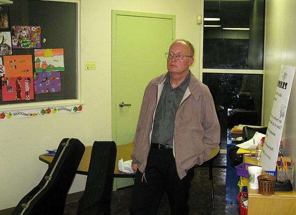
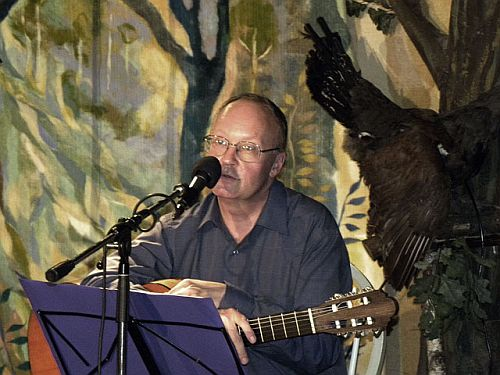
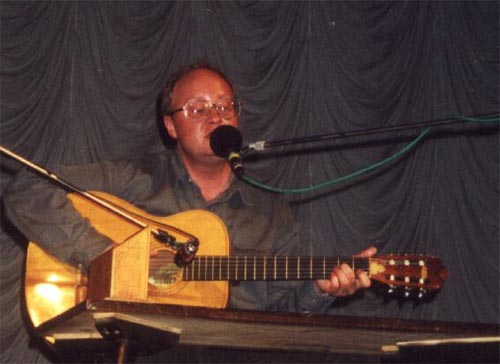
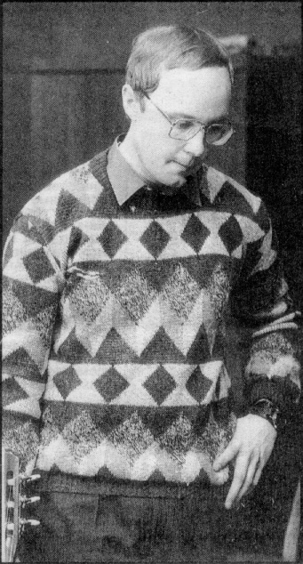
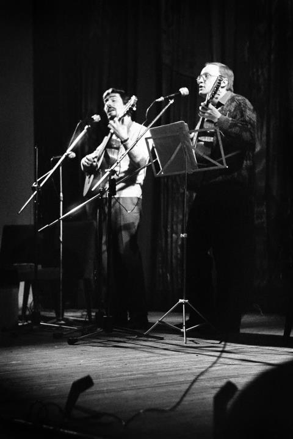

Фотография с концерта 11.11.12 в Принстоне.

Фотография с концерта в Астане 20 октября 2012 г.
Фото Игоря Бургандинова (оригинал здесь)

Фотография с концерта в Москве 17 октября 2011 от nataljusha.
Оригинал здесь.

Фотографии с концерта в Одессе 11 сентября 2011 от lingvik.
Оригиналы здесь.
Уличная сценка
Афиша
Фотография с концерта в "Гнезде глухаря",
Москва, 9 июня 2011. Прислал Даниил Крылов.
Фото с концерта в Питере, 19.05.2000 г. Прислала Л. Воскресенская.

Фотопортрет работы Исаака Ременюка
М. Стародубцев и М. Щербаков, концерт в Центральном
Доме Художника (Москва), 1997.
Фото А. Копыловой.

Фотография из иерусалимской газеты "Вести", 1996.
Прислал
М. Пасуманский.
Фотография из газеты "Собеседник", 1992. Фотограф - Александр Ефремов.

1990 (из ФБ).
1991 (Фото Ф. Маркушевича, ФБ)


М. Стародубцев и М. Щербаков, концерт в ДК МЭЛЗ, 1989 г.
Фото И. Филатова

Фотография с обложек кассет #1-8 (старая).
Фотография c форзаца обложки диска "Воздвиг я памятник".
Прислала Л. Воскресенская.